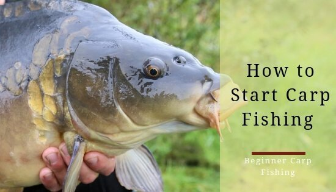
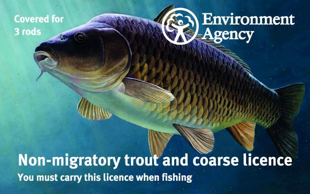

So you’ve decided to take up Carp fishing probably one of the most popular participation sports there is. You may have had some experience in fishing for smaller silver fish or other species and you've seen the guy on the other side of the lake land his 20 lb. plus Carp and thought "yeah i’d like some of that." I don't blame you! However, knowing where to start with carp fishing can be very overwhelming; there is a whole world of equipment and tackle available for the Carp angler, which we have covered in other articles across the site. For this article I will cover the basics of exactly what gear you need to get you started as a beginner without breaking the bank too much. I'll also go through some basic set-up options to get you on the bank and fishing as soon as possible
First and foremost you will require a fishing rod licence to fish in lakes and rivers here in the UK or face a potential fine of up to £2500. The most convenient way to obtain your licence is via the government website: https://www.gov.uk/fishing-licences/buy-a-fishing-licence
 8 9